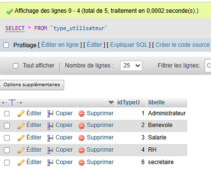
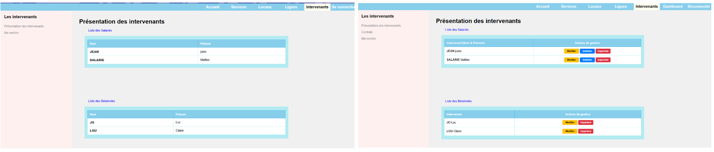
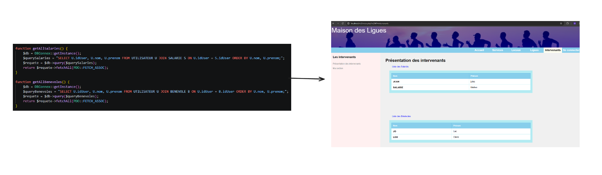
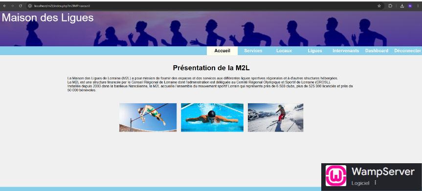

Site Dynamique - Maison des Ligues (M2L)
Contexte et Objectifs du Projet
La Maison des Ligues de Lorraine (M2L) fournit des infrastructures aux ligues sportives régionales. L'objectif de cet Atelier Professionnel (AP 3.1) était de faire évoluer un site web statique existant vers une application dynamique sécurisée. Réalisé en groupe de trois étudiants sur une période de 20 heures, ce projet couvrait la gestion des comptes, l'implémentation de modules métiers (CRUD) et le cloisonnement strict des accès selon le profil des utilisateurs.
Analyse réflexive des compétences mobilisées
Clique sur une compétence pour déplier l'analyse et afficher la preuve technique associée.
Gérer le patrimoine informatique
Application concrète :
Afin de sécuriser les données sensibles de l'organisation (telles que les bulletins de salaire ou les informations des intervenants), j'ai participé à la mise en œuvre d'une gestion des droits d'accès au niveau de la base de données relationnelle MySQL
Comme le montre l'extraction de la table type_utilisateur, nous avons créer 5 profils dotés d'identifiants uniques (idTypeU) : Administrateur, Bénévole, Salarié, RH et Secrétaire.
Ce niveau d'habilitation permet d'appliquer la logique de contrôle côté back-end : par exemple, le rôle *RH* (ID 4) est le seul autorisé à manipuler l'ensemble des contrats, tandis qu'un utilisateur *Bénévole* ne peut consulter que ses informations personnelles.

Structure relationnelle des profils de connexion et des habilitations (phpMyAdmin)
Interface quand tu n'est pas connecté / Interface connectée en tant que RHDévelopper la présence en ligne de l’organisation
Application concrète :
Le site initial de la Maison des Ligues était purement statique. Ma mission a consisté à le faire évoluer afin de rendre l'affichage des informations (intervenants) totalement dynamique et dépendant des données stockées dans notre base de données.
Pour réaliser cette évolution, j'ai développé des scripts en PHP permettant d'établir une connexion à la base de données. J'ai ensuite écrit les requêtes SQL nécessaires (avec jointures, comme FROM utilisateur U JOIN salarie S ON U.idUser = S.idUser) pour extraire proprement les informations et les injecter dynamiquement dans les vues. Tout cela en modèle MVC.
Cette intégration permet de mettre à jour automatiquement sur le site dès qu'un changement survient dans la base de données.

Extrait d'une fonction PHP pour récupérer les données et les afficher sur le siteMettre à disposition des utilisateurs un service informatique
Application concrète :
Une fois l'implémentation des modules PHP terminée et validée par l'équipe, On as procédé au déploiement de l'application sur notre environnement de simulation local s'appuyant sur l'architecture WAMP/XAMPP.

validation finale de la plateforme M2L déployée et testée en local